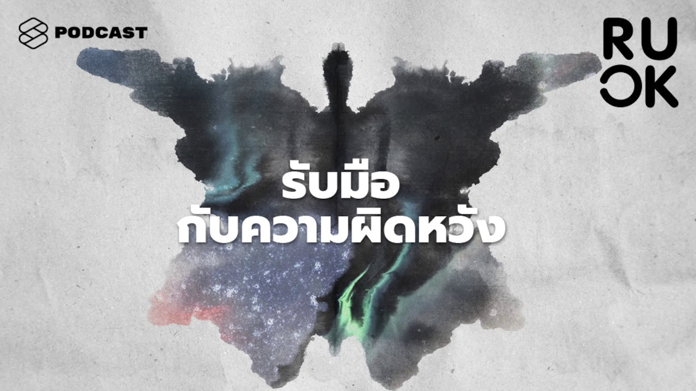
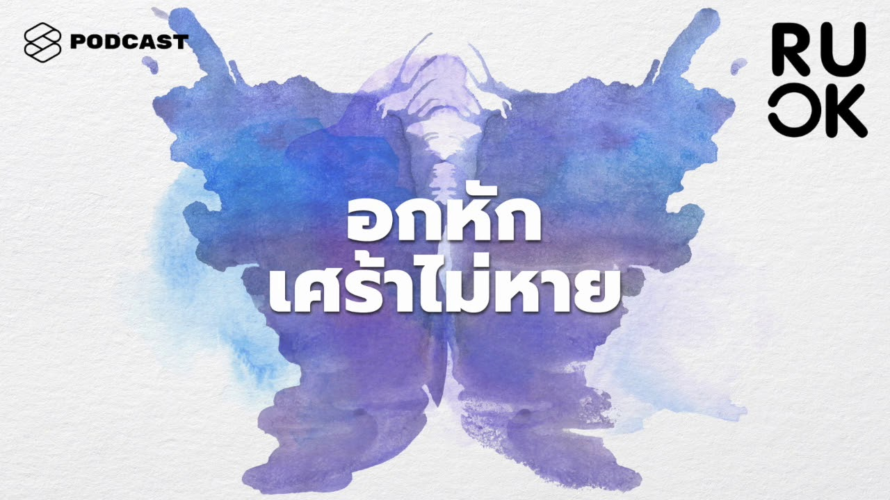

BluEase
แบบประเมิน
คลังความรู้
สถานที่รักษา
โรคที่เกี่ยวข้อง
รายการแนะนำ
แบบประเมินโรคซึมเศร้า
สถานที่รักษา
คลังความรู้
ภาวะ Dead Inside ใจพังแต่ยังต้องเดินต่อไป
Alljit

ความผิดหวังเป็นเรื่องธรรมดาของชีวิต แต่ควรเปลี่ยนวิธีคิดก่อนจะกลายเป็นกับดัก
The Standard Podcast

5 ขั้นตอนทางจิตวิทยาของการอกหัก และถ้าเศร้าหนักเกินเยียวยาไปหาจิตแพทย์ได้ไหม
The Standard Podcast